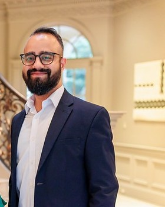
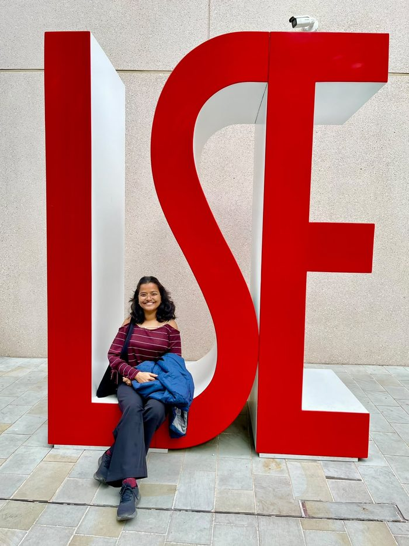

The people behind the guidance
Thoughtful perspectives.
Practical pathways.
Meet the people bringing research, experience and personal attention to academic and career decisions.

Founder · Economics & Public Policy
Ashu Arora
Ashu founded BridgeMinds Lab to offer students honest, profile-first guidance grounded in first-hand experience of international education.
Ashu is an economist with a Master’s degree in International Economics and Finance from Johns Hopkins University’s School of Advanced International Studies (SAIS).
Ashu currently works on research into labour migration, skills and employment with a World Bank economist, and previously conducted economics research at the Indian Institute of Management Ahmedabad, co-authoring work published in The Journal of Development Studies.
Read Ashu’s full profile at ashuarora.com ↗
Consultant · Environmental Economics & Sustainability
Vaishali Srivastava
We’re delighted to welcome Vaishali as an addition to the BridgeMinds Lab team, bringing expertise at the intersection of environmental economics, climate change and sustainable development.
Vaishali holds an MSc in Environmental Economics and Climate Change from the London School of Economics and Political Science (LSE), alongside undergraduate and postgraduate degrees in Economics from India.
Her experience spans development and policy research at IIM Ahmedabad, quantitative academic work at LSE, and sustainability project development at CATCH Foundation. She contributes to initiatives in afforestation, urban forestry, biodiversity and water restoration, and agroforestry—covering feasibility assessment, proposals, stakeholder engagement and impact monitoring.
Her research interests focus on the links between public policy, natural resources and development. Her MSc dissertation examined the Jal Jeevan Mission, rural piped-water access and groundwater extraction in India.
Connect with BridgeMinds Lab ↗Your next step starts here
Let’s find your
way forward.
Tell us about your plans. We’ll help you understand what kind of guidance could be useful.